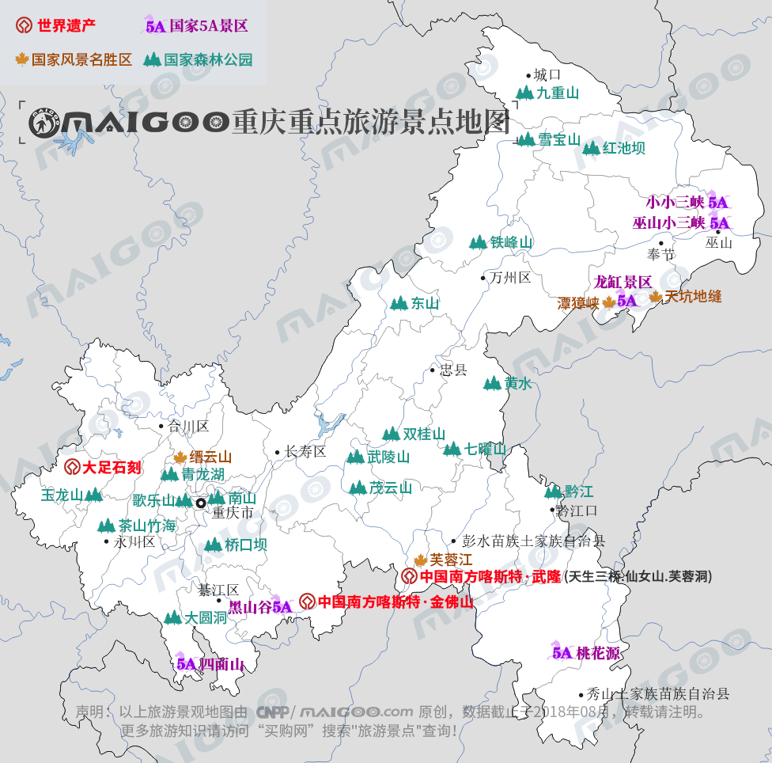

| | | | | |
| - | - | - | - | - |
|<b>别名</b>|山城、巴渝、渝州、雾都、桥都、江城||<b>著名景点</b>|洪崖洞、大足石刻、武隆喀斯特旅游区、长江三峡、武陵山大裂谷等|
|<b>行政区类别</b>|直辖市||<b>机 场</b>|重庆江北国际机场、万州五桥机场、黔江武陵山机场|
|<b>所属地区</b>|中国·西南地区、长江上游地区||<b>火车站</b>|庆站、沙坪坝站、重庆北站、重庆西站、万州北站、荣昌北站等|
|<b>下辖地区</b>|26个区、8个县、4个自治县||<b>车牌代码</b>|渝A、B、C、D、F、G、H|
|<b>电话区号</b>|（（+86）023||<b>GDP</b>|19500.27亿元（2017年）|
|<b>邮政区码</b>|400000-409912||<b>人均GDP</b>|63689元（9433美元）（2017年）|
|<b>地理位置</b>|长江上游地区 中国内陆西南部||<b>最高建筑</b>|重庆环球金融中心（高339米）|
|<b>面 积</b>|8.24万平方千米||<b>高等学府</b>|重大、西南大学、陆军军医大学|
|<b>人 口</b>|常住人口3075.16万（2017年）||<b>市委书记</b>|陈敏尔|
|<b>方 言</b>|西南官话-重庆方言、土家语、苗语等||<b>行政区划代码</b>|500000|
|<b>气候条件</b>|亚热带季风性湿润气候||<b>市 长</b>|唐良智|
|-|-||<b>市 树</b>|黄桷树|
|-|-||<b>市 花</b>|山茶花|
| <b>重庆生活文化</b> | <b>重庆民间特色文化</b> | <b>重庆曲艺文化</b> | <b>重庆建筑文化</b> | <b>重庆宗教文化</b> |
| - | - | - | - | - |
| <a href="javascript:;" onclick="live(this);">习俗/民俗</a> | <a href="javascript:;" onclick="feature(this);">秀山花灯</a> | <a href="javascript:;" onclick="art(this);">重庆川剧</a> | <a href="javascript:;" onclick="building(this);">重庆传统建筑文化</a> | - |
| <a href="javascript:;" onclick="live(this);">方言文化</a> | <a href="javascript:;" onclick="feature(this);">梁平年画</a> | <a href="javascript:;" onclick="art(this);">川江号子</a> | - | - |
| <a href="javascript:;" onclick="live(this);">节日文化</a> | <a href="javascript:;" onclick="feature(this);">梁平竹帘</a> | <a href="javascript:;" onclick="art(this);">木洞山歌</a>| - | - |
| <a href="javascript:;" onclick="live(this);">嫁娶文化</a> | - | - |-|-|
| <a href="javascript:;" onclick="live(this);">饮食文化</a> | - | -|-|-|
## <i class="fa fa-file-text-o"></i>&nbsp;目录（Table of Contents）
+ [I. 总路线图（暂无）](#one)
+ [II. 景点](#two)
+ [III. 路线规划（暂无）](#three)
<h2 id="two"><i class="fa fa-star-o"></i>&nbsp;景点</h2>
